デジタル電源制御 お試し版 操作手順書
概要
このチュートリアルでは、NUCLEO-H755ZI-Q向けデジタル電源制御環境を使い、 プログラムの内容確認、ビルド（書き込み用プログラムの作成）、基板への書き込み、 動作確認、PWM・ADC設定の変更までを行います。 手順どおりに進めることで、PWM出力、電圧測定、PI制御、Ethernetからの操作を一通り体験できます。
基板内の2つのCPUを役割分担して使用します。一方はEthernet通信を担当し、もう一方は PWM出力、電圧測定、出力電圧を目標値へ近づける制御を担当します。 本書では、この環境を用意する人を「提供元」、このチュートリアルを操作する人を「体験者」と記載します。 体験者が変更するファイルは、主に control_core/customer_code フォルダ内にあります。
安心してお試しください
このお試し版は、体験者が自由に操作し、プログラムを変更して試すことを前提に作成しています。 このキットでは、「壊さないこと」よりも、実際に手を動かしていろいろ試してみることを重視しています。
USBケーブルやLANケーブルは、実験の開始時や終了時に抜き差ししても問題ありません。
VS Code上のファイルは、自由に編集して保存できます。
プログラムを書き換えた後に、期待どおり動かなくなっても問題ありません。
操作の途中で分からなくなった場合や、元に戻せなくなった場合は、提供元が復旧を支援します。
提供元では、このお試し版と同じ内容の予備機を保有しています。元に戻せなくなった場合は、 予備機との交換を基本として対応します。社内ネットワークへ接続する必要はありません。 体験者が希望し、インターネットを利用できる場合に限り、遠隔での復旧支援も選択できます。
「壊してしまうかもしれない」と心配せず、ぜひ自由に試してみてください。 実際にプログラムを変更し、結果を確かめることが、この環境を理解する一番の近道です。
このチュートリアルは、次の順番で進みます。
Ubuntuへログインし、VS Codeで専用の作業画面を開く
プログラムを作成して基板へ書き込む
Ethernetから基板を操作し、PWMとPI制御を確認する
PWMとADCの設定を変更し、変更結果を確認する
使用する機器と接続
このお試し版では、NUCLEO-H755ZI-Q、付属のRCフィルタ基板、Ethernetケーブル、 ST-LINK USBケーブルを使用します。PWM波形を確認する場合は、オシロスコープも使用します。 インターネットへの接続は不要です。付属のLANケーブルは、ノートPCとNUCLEO-H755ZI-Qを 直接つなぐために使用します。ADCの確認では、PWM出力を付属のRCフィルタ基板へ接続します。 まず、写真のように、付属のLANケーブルとマイクロUSBケーブルをPCにつなげます。
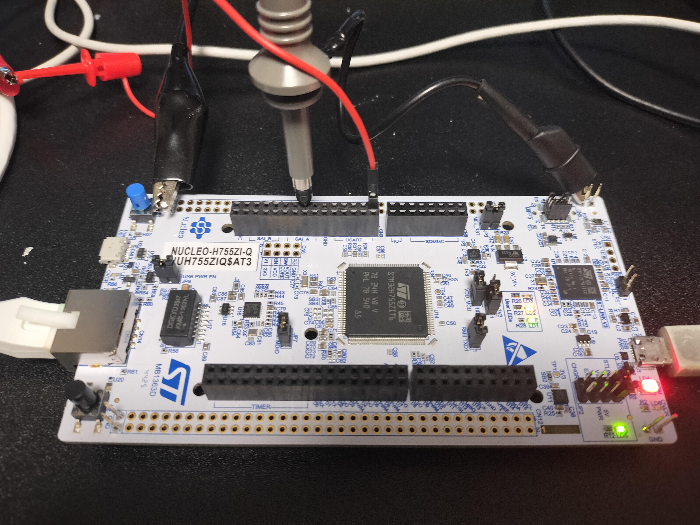
NUCLEO-H755ZI-Q全体。A0、GND、Ethernet、ST-LINK USB、PE9、PE8の位置を確認します。
1. UbuntuノートPCでVS Codeを開く
ノートPCを開きます。電源が入っていない場合は、電源ボタンを押して起動します。 Ubuntu 24.04のログイン画面に、氏名 Demo User が表示されます。 ユーザー名 demo を入力する必要はありません。Demo User を選択し、提供元から案内された パスワードを入力してEnterを押します。
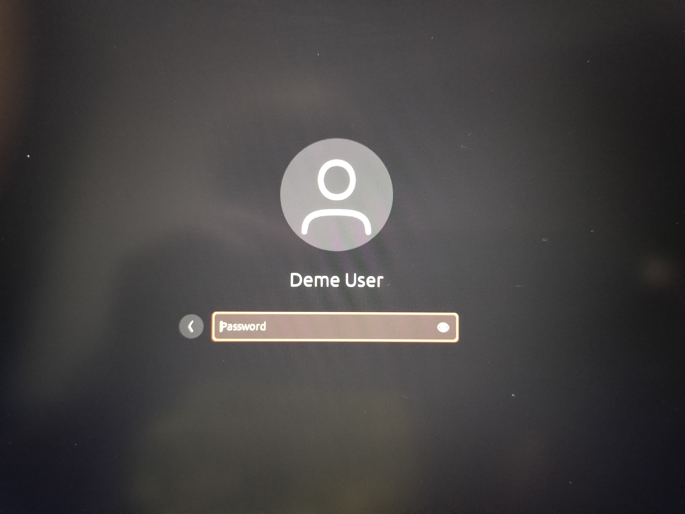
Demo User を選択し、提供元から案内されたパスワードを入力します。
Ubuntuでアプリや操作を探す
ログイン後、画面左下のアプリのマークをクリックすると、使用できるアプリの一覧を表示できます。 画面上部の検索欄へ文字を入力すると、アプリだけでなく、設定や一般的な操作も検索できます。
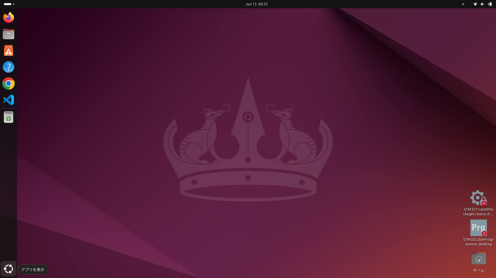
画面左下のアプリのマークをクリックすると、アプリ一覧と検索欄が表示されます。
例えばノートPCの電源を切る場合は、検索欄へ 電源オフ と入力し、表示された 電源オフ を選択します。その後に確認画面が表示された場合は、もう一度 電源オフ を選択します。
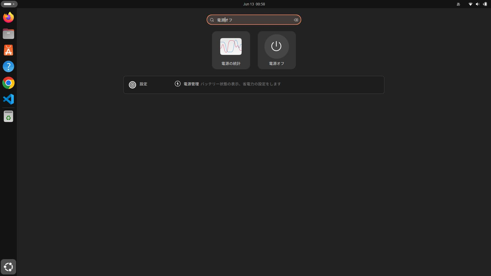
アプリ一覧の検索欄へ 電源オフ と入力した状態。
VS Codeを開く
ログイン後、画面左側のバーにあるVS Codeのアイコンをクリックします。 VS Codeは、前回開いていたこのお試し版の作業フォルダを表示し、必要な準備を自動的に始めます。 準備が完了するまで、数十秒から数分かかる場合があります。準備中はVS Codeを閉じずに待ちます。
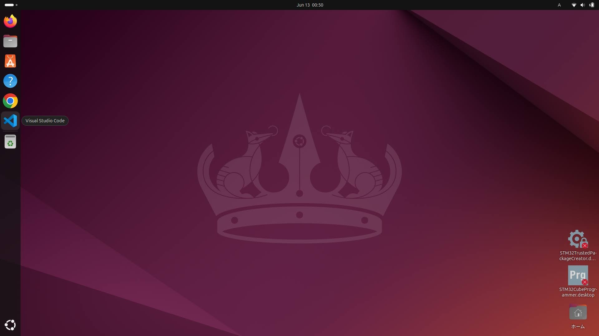
画面左側のバーに固定されているVS Codeを開きます。
初回起動時や準備中に確認メッセージが表示された場合は、次のように進めます。 英語表示の場合もあります。表示されたメッセージに対応する行を、次の表から選んで進めます。
表示例 |
選択する内容 |
|---|---|
Do you trust the authors of the files in this folder? |
Yes, I trust the authors を選択します。 |
Reopen in Container または Open Folder in Container |
Reopen in Container または Open Folder in Container を選択します。 |
Dev Containers extension is required または拡張機能のインストール確認 |
Install または OK を選択します。 |
Would you like to install the recommended extensions? |
Install を選択します。 |
Ubuntuのパスワード入力画面が表示される |
ログイン時と同じ、提供元から案内されたパスワードを入力します。 |
Retry またはやり直しを求めるメッセージ |
Retry を選択します。再び表示された場合は、VS Codeを一度閉じて開き直します。 |
通知欄に Starting Dev Container、Opening in Container 等が表示される |
操作せず、準備が完了するまで待ちます。 |
VS Codeの更新案内など、この作業と関係のない通知 |
このチュートリアルでは操作せず、閉じるかそのままにします。 |
表にないメッセージが表示され、どれを選ぶか判断できない場合は、画面を閉じずに提供元へ確認します。
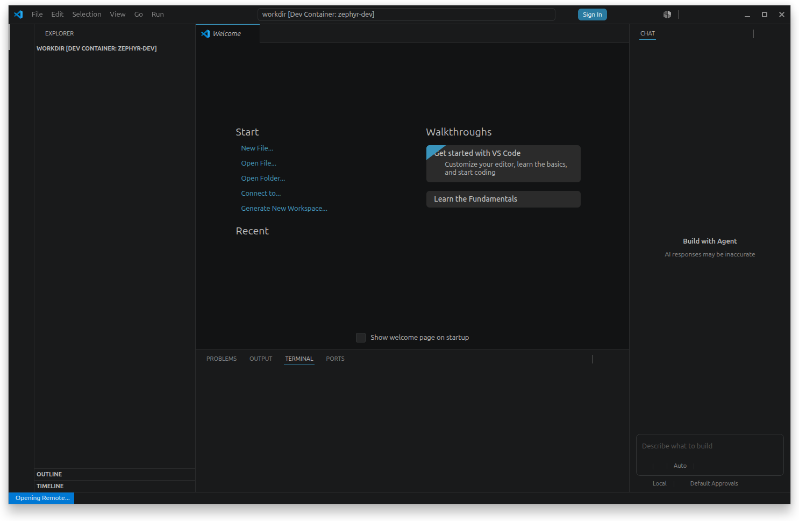
VS Codeが専用の作業画面を準備している状態。確認メッセージが表示された場合は、上表に従って進めます。
準備が完了すると、VS Code画面左下に Dev Container を含む表示が現れ、 画面左側には digital_power_control のファイル一覧が表示されます。 この状態になれば、プログラムの確認や変更を始められます。
VS Codeでの保存と終了
VS Codeでファイルを変更した後は、キーボードの Ctrl+S を押して保存します。 Ctrl キーを押したまま S キーを押してください。ファイル名の横に表示されていた丸印が消えれば、 保存できています。
変更したファイルを保存していれば、作業の途中でもVS Code画面右上の × をクリックして閉じることができます。 次回VS Codeを開くと、このお試し版の作業フォルダが表示され、必要な準備が自動的に始まります。 ビルドや基板への書き込みを実行中の場合は、その処理が完了してからVS Codeを閉じます。
2. 作業フォルダを確認する
VS Codeで専用の作業画面が表示された状態で、メニューから Terminal -> New Terminal を選択します。
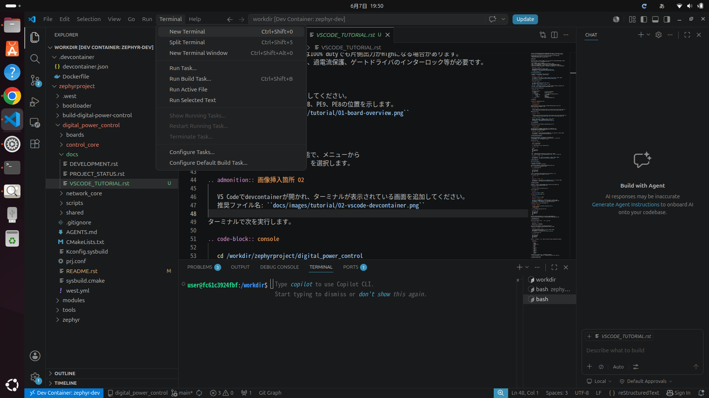
VS Codeで専用の作業画面を開き、画面下部にコマンド入力欄を表示した状態。
Terminal -> New Terminal をもう一度選択し、ターミナルを2つ開きます。 画面下部右側に表示されるターミナル名をクリックすると、使用するターミナルを切り替えられます。 最初に開いたターミナルを**プログラム作成・書き込み用**、2つ目を**基板操作用**として使います。 必要になったときは、ターミナル右上の + ボタンで追加できます。
プログラム作成・書き込み用のターミナルで、次の1行を入力してEnterを押します。
cd /workdir/zephyrproject/digital_power_controlチュートリアル開始時の標準設定は、PWM最大周波数が20000 Hz、 ADC電圧表示の最大値が3300 mVです。次の値になっている状態から演習を始めます。
#define MAX_FREQUENCY_HZ 20000U
#define ADC_INPUT_FULL_SCALE_MV 3300UVS Code画面左側のファイル一覧には、主に次のフォルダがあります。
digital_power_control/
|-- control_core/
| `-- customer_code/ 体験者が変更するファイル
| |-- pwm/ PWM出力の設定
| |-- adc/ 測定電圧の換算
| `-- feedback/ PI制御の計算
|-- network_core/ Ethernet通信
`-- scripts/ ビルドと基板書き込み用の命令3. 初回ビルド
先ほど cd で移動した作業フォルダで、次を実行します。
./scripts/build.shこの命令は、以前のビルド結果を消してから、基板内の2つのCPUで動かすプログラムを作成します。 成功すると、書き込み用ファイルが2つ作成されます。
/workdir/zephyrproject/build-digital-power-control/digital_power_control/zephyr/zephyr.bin
/workdir/zephyrproject/build-digital-power-control/control_core_m4/zephyr/zephyr.binビルド完了後、次の命令を入力して、書き込み用ファイルが2つ表示されることを確認します。
ls -lh \
/workdir/zephyrproject/build-digital-power-control/digital_power_control/zephyr/zephyr.bin \
/workdir/zephyrproject/build-digital-power-control/control_core_m4/zephyr/zephyr.bin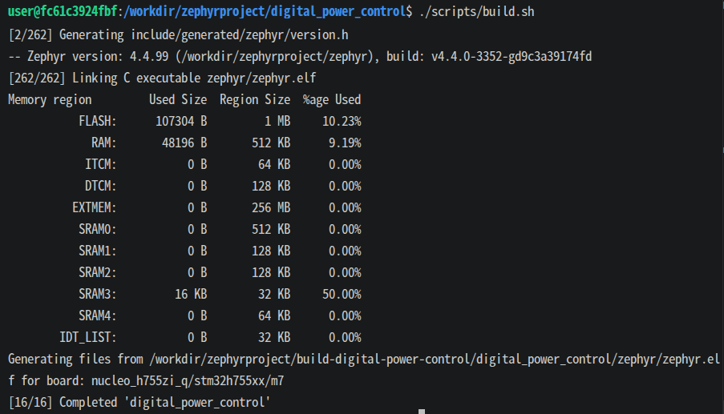
VS Code画面下部で、2つのプログラム作成が成功した状態。
4. 基板への書き込み
NUCLEO-H755ZI-QのST-LINK USB端子がPCへ接続されていることを確認し、次を実行します。
./scripts/flash.shこの命令は、直前に作成した2つのプログラムを基板へ書き込みます。 書き込みに失敗する場合は、USB接続とST-LINKの認識状態を確認してください。
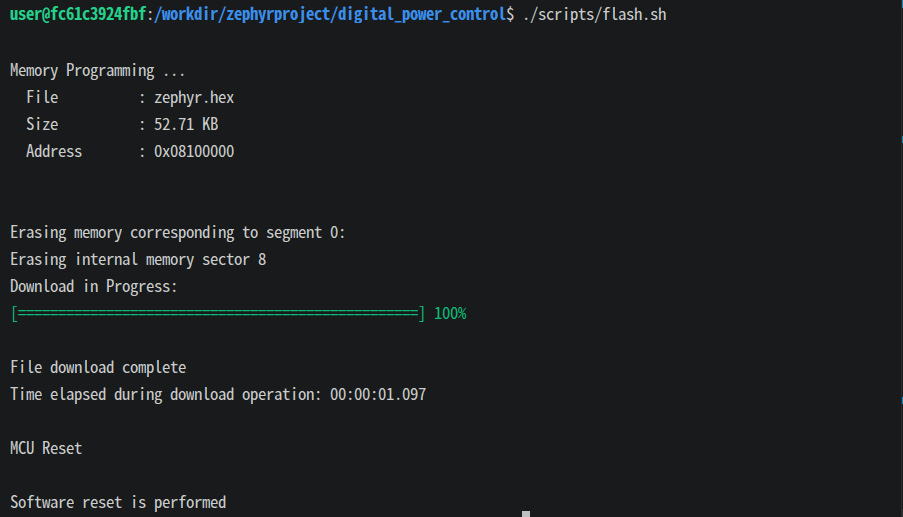
scripts/flash.sh による基板への書き込み成功画面。
5. Ethernetで基板を操作する
PC側のIPアドレスは設定済みです。NucleoのEthernet端子をPCへ接続します。 基板のIPアドレスは 192.168.100.2 です。
手順2で開いた基板操作用ターミナルを選択します。 nc は、PCからEthernet経由で基板へ文字を送るためのプログラムです。 基板操作用ターミナルで、次を入力します。
nc 192.168.100.2 4242接続に成功すると、次の案内が表示されます。
NUCLEO-H755ZI-Q complementary PWM server; send HELPこの表示後は、基板操作用の欄が nc で基板へ接続中です。 この欄へ入力した文字は、PC用の命令として実行されず、Ethernet経由で基板へ送信されます。 入力待ちを示す記号が表示されなくても正常です。次の基板操作命令を1行ずつ入力し、毎回Enterを押します。
STATUS
GET
MODE FEEDFORWARD
SET 20000 25 0
GET
OFFSET の3つの数値は、順番に「周波数Hz」「出力割合%」「上下のPWMを切り替える間の待ち時間ns」です。 OFF を入力するとPWMを停止します。
基板操作用の欄で Ctrl+C を押すと基板との接続が終了し、PC用の命令を入力できる状態へ戻ります。 再接続する場合は、同じターミナルで再度 nc 192.168.100.2 4242 を実行します。 ビルドや書き込みは、 nc 接続中ではないプログラム作成・書き込み用の欄で実行してください。
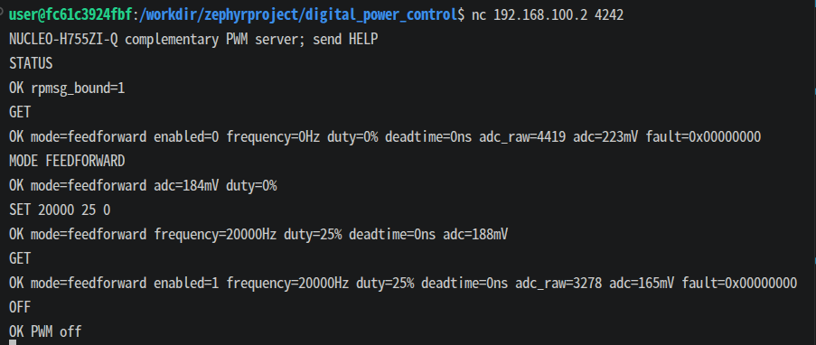
VS Code画面下部の基板操作用の欄で nc を実行し、基板へコマンドを送信している状態。
6. PWM波形を確認する
PWM出力は次のピンです。
PE9: 主に確認するPWM出力
PE8: PE9と反対に動作するPWM出力
オシロスコープのGNDをNucleo GNDへ接続し、PE9とPE8を測定します。
基板操作用の欄が nc で基板へ接続中であることを確認し、次を入力します。
MODE FEEDFORWARD
SET 10000 25 500
GET期待する波形は、周波数約10 kHz、PE9の出力割合約25%です。 また、PE9とPE8が互いに反対に動作し、切り替え時に約500 nsの待ち時間が入ります。測定後はPWMを停止します。
OFF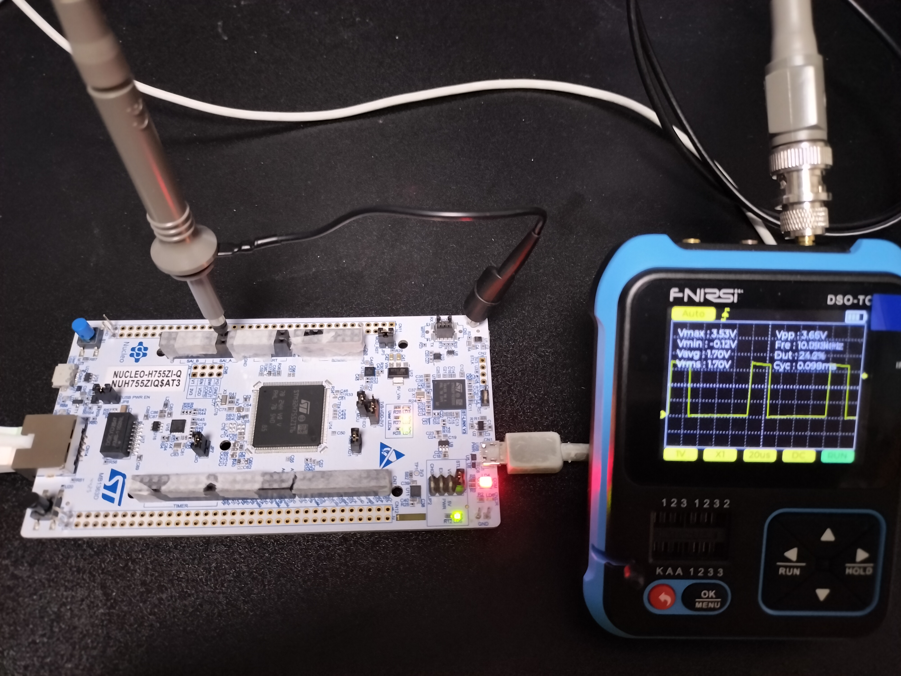
写真はPE9で測定したPWM波形です。2チャンネルのオシロスコープを使用する場合は、 PE8とPE9を同時に測定し、2つの出力が同時にHighにならないことと、切り替え時に約500 nsの 待ち時間があることを確認します。PE8は写真手前のコネクタCN10にあり、使用する箇所以外は テープで覆っています。1チャンネルで測定する場合は、PE9の波形を確認して次へ進みます。 写真と大きく異なる波形が表示された場合は、測定画面を残したまま提供元へ確認します。
7. PWMコード変更演習
ここでは、体験者が最大PWM周波数を20 kHzから10 kHzへ変更します。 VS Code画面左側のファイル一覧から、次のファイルを開きます。
control_core/customer_code/pwm/pwm_control.c次の定義を探します。
#define MAX_FREQUENCY_HZ 20000Uこれを次のように変更し、 Ctrl+S を押して保存します。
#define MAX_FREQUENCY_HZ 10000U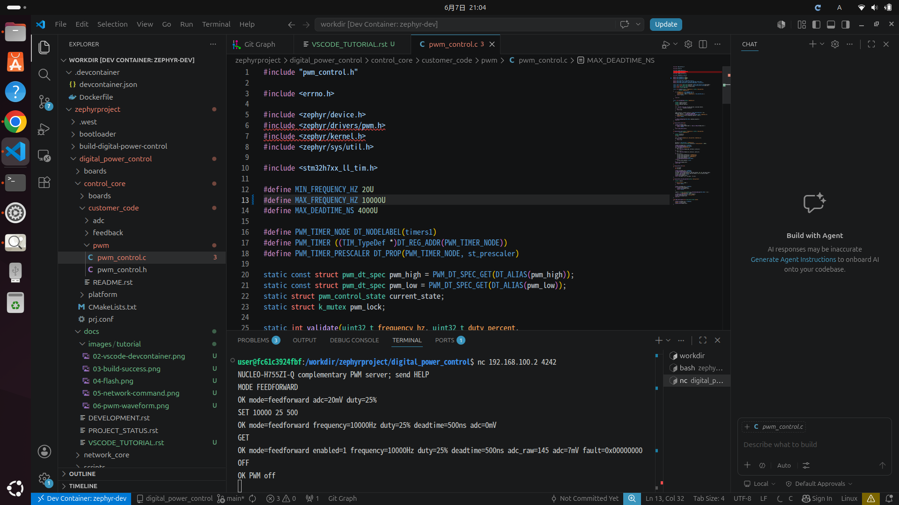
体験者が変更する MAX_FREQUENCY_HZ をVS Codeで編集します。
Ctrl+S でファイルを保存したら、まず基板操作用ターミナルを選び、 Ctrl+C を押して nc 接続を終了します。次にプログラム作成・書き込み用ターミナルを選び、再度ビルドと書き込みを行います。
./scripts/build.sh
./scripts/flash.sh書き込みが完了したら、基板操作用ターミナルを選び、次を入力して基板へ再接続します。
nc 192.168.100.2 4242接続成功メッセージが表示されたら、変更結果を確認します。
MODE FEEDFORWARD
SET 20000 25 0
SET 10000 25 0
GET
OFF最初のSET 20000は範囲外としてエラーになり、SET 10000は成功します。 確認後は、 MAX_FREQUENCY_HZ を 20000U へ戻し、 Ctrl+S で保存します。
基板操作用ターミナルを選び、 Ctrl+C を押して nc 接続を終了します。 次にプログラム作成・書き込み用ターミナルを選び、元の設定を反映したプログラムを作成して基板へ書き込みます。
./scripts/build.sh
./scripts/flash.sh書き込みが完了したら、基板操作用ターミナルを選び、次を入力して基板へ再接続します。
nc 192.168.100.2 4242接続成功メッセージが表示されたら、最大PWM周波数は20 kHzへ戻っています。次のADCとPI制御の確認へ進みます。
8. ADCとPI制御の確認
PWM出力 PE9 を、付属の2段RCフィルタ基板を通してアナログ入力 A0 へ接続します。 RCフィルタは、PWMの細かなON/OFF波形を、測定しやすい平均電圧へ変える回路です。NucleoのGNDも接続します。
PE9 PWM -- R1 4.7k --+-- R2 4.7k --+-- A0
| |
C1 1uF C2 1uF
| |
Nucleo GND ----------+--------------+このフィルタ基板は、抵抗R1、R2が各4.7 kΩ、コンデンサC1、C2が各1 µFです。 写真を参考に、付属のフィルタ基板を接続してください。
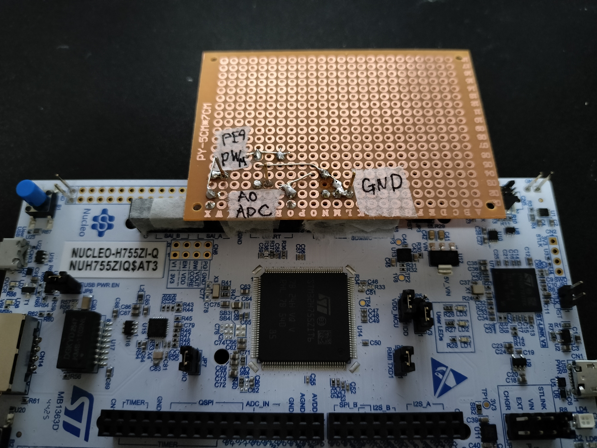
PWM出力を2段RCフィルタ経由でA0へ戻し、GNDを共通接続します。
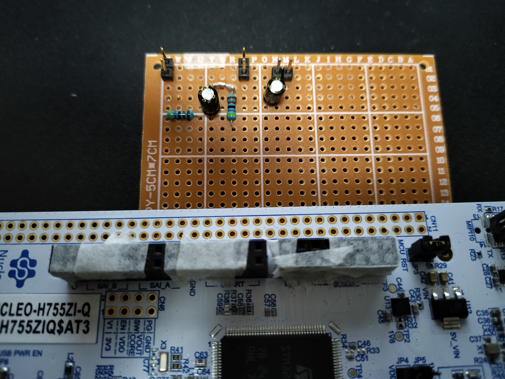
使用しない差し込み口はテープで覆っています。写真と見比べながら接続してください。
基板操作用の欄が nc で基板へ接続中であることを確認し、次を入力します。
MODE FEEDFORWARD
SET 20000 0 0
MODE FEEDBACK
SET 20000 50 0
GETMODE FEEDBACK を入力すると、出力電圧を目標値へ近づけるPI制御が有効になります。 この状態では、SET の2番目の数値は出力割合ではなく、測定電圧の目標値です。 SET 20000 50 0 の50は、測定範囲3.3 Vの50%、すなわち約1.65 Vを意味します。 GET の target=50% は目標値、duty=...% はPI制御が決めた実際の出力割合です。
電圧測定とPI制御は、1秒間に10000回実行されます。測定を一定間隔で行うための処理は、 体験者が調整するPI制御のファイルとは分けてあります。通常は control_core/customer_code/feedback フォルダ内だけを変更してください。
目標値を25%、50%、75%へ変更し、ADC表示がそれぞれ約0.825 V、1.65 V、2.475 Vへ 近づくことを確認します。
9. ADC電圧表示の変更演習
ここでは、A0の測定結果をmVで表示するときの基準値を変更します。 表示だけが変わり、PI制御の動作は変わりません。
VS Code画面左側のファイル一覧から、次のファイルを開きます。
control_core/customer_code/adc/adc_input.h次の定義を探します。
#define ADC_INPUT_FULL_SCALE_MV 3300U動作を分かりやすく確認するため、一時的に次へ変更し、 Ctrl+S を押して保存します。
#define ADC_INPUT_FULL_SCALE_MV 3000U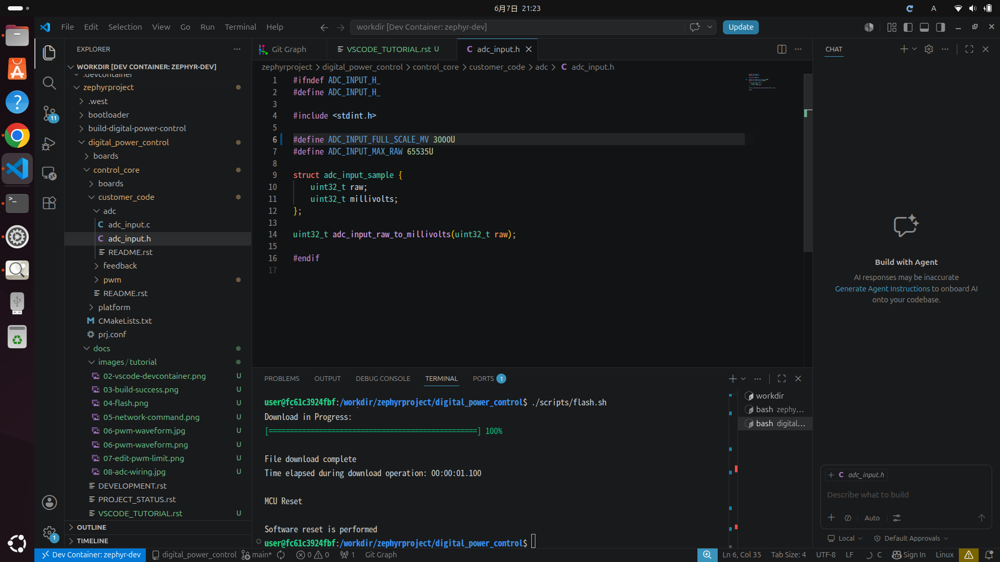
体験者が変更する ADC_INPUT_FULL_SCALE_MV をVS Codeで編集します。
基板操作用ターミナルを選び、 Ctrl+C を押して nc 接続を終了します。 次にプログラム作成・書き込み用ターミナルを選び、再ビルドと再書き込みを行います。
./scripts/build.sh
./scripts/flash.sh書き込みが完了したら、基板操作用ターミナルを選び、次を入力して基板へ再接続します。
nc 192.168.100.2 4242接続成功メッセージが表示されたら、PWM出力をRCフィルタ経由でA0へ接続したまま、次を入力します。
MODE FEEDFORWARD
SET 10000 50 0
MODE FEEDBACK
GET目標を50%にした場合、表示上の最大値を3000 mVへ変更したため、adc は約1500 mVと表示されます。 target=50% とPI制御の動作は変わりません。
これは、役割ごとに変更するフォルダを分けているためです。
customer_code/adc : 測定値を電圧や電流の表示へ換算する
customer_code/feedback : 目標値と測定値からPWMの出力割合を計算する
customer_code/pwm : PWMの周波数、出力割合、切り替え時の待ち時間を設定する
control_core/platform : 一定間隔の測定や、基板内のCPU間通信を行う。通常は変更しない
確認後は、 ADC_INPUT_FULL_SCALE_MV を 3300U へ戻し、 Ctrl+S で保存します。
10. 変更後の最終確認
PWM最大周波数を 20000U、ADC電圧表示の最大値を 3300U へ戻した状態で、最終確認を行います。
基板操作用ターミナルを選び、 Ctrl+C を押して nc 接続を終了します。 次にプログラム作成・書き込み用ターミナルを選び、ビルドと書き込みを行います。
./scripts/build.sh
./scripts/flash.sh書き込みが完了したら、基板操作用ターミナルを選び、次を入力して基板へ再接続します。
nc 192.168.100.2 4242接続成功メッセージが表示されたら、次を入力して確認します。
STATUS
MODE FEEDFORWARD
SET 10000 25 500
GET
MODE FEEDBACK
GET
OFF確認項目:
基板内の2つのCPU用プログラムを両方作成できる
STATUS で rpmsg_bound=1 が表示され、基板内の2つのCPUが通信できている
FEEDFORWARDモードでは SET で指定した出力割合が使用される
FEEDBACKモードでは測定電圧が目標値へ近づき、PI制御が出力割合を調整する
OFF でPWMが停止する
fault=0x00000000 と表示され、正常に動作している
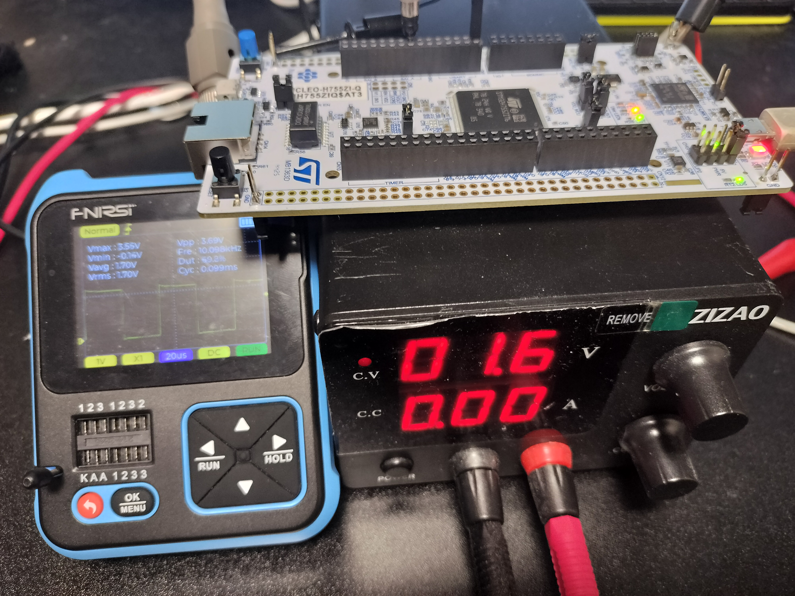
ADC入力とPWM出力の最終動作確認。
11. 実験を終了する
最終確認で OFF を入力し、PWMが停止していることを確認した後、次の順番で実験を終了します。
基板操作用ターミナルを選び、 Ctrl+C を押して nc 接続を終了します。
変更したファイルを保存していない場合は、 Ctrl+S を押して保存します。
VS Code画面右上の × をクリックして、VS Codeを閉じます。
NUCLEO-H755ZI-QとノートPCを接続しているUSBケーブルを外します。
NUCLEO-H755ZI-QとノートPCを接続しているLANケーブルを外します。
ノートPCの電源を切る場合は、手順1の「Ubuntuでアプリや操作を探す」に従い、 電源オフ を実行します。
VS Code画面右上の × で閉じて問題ありません。次回VS Codeを開くと、このお試し版の作業フォルダが 表示され、必要な準備が自動的に始まります。
ノートPCの電源を切っても、 Ctrl+S で保存したファイルは消えません。 また、USBケーブルを外したり基板の電源が切れたりしても、NUCLEO-H755ZI-Qへ最後に書き込んだ プログラムは消えません。次回USBケーブルを接続すると、最後に書き込んだプログラムで基板が起動します。
トラブルシューティング
MODE FEEDBACK が ERR cannot set mode (-19) になる
基板内の電圧測定機能を開始できていません。もう一度ビルドと書き込みを行い、 どちらもエラーなく完了したことを確認してください。再度同じエラーが表示された場合は、 エラーメッセージを残したまま提供元へ確認します。
Ethernet経由で基板へ接続できない
PC側Ethernet接続のIPアドレスが 192.168.100.1、サブネットマスクが 255.255.255.0 になっていることを確認してください。 接続できない場合は、Ethernetケーブル、PC側IPアドレス、基板への書き込み結果を順番に確認します。 確認後も接続できない場合は、表示されている画面を残したまま提供元へ確認します。
書き込みできない
ST-LINK USBケーブルを挿し直し、他の書き込みソフトを閉じてから、もう一度実行してください。 解決しない場合は、ノートPCを再起動してから、VS Code、ビルド、書き込みの順にもう一度実行します。 再実行しても書き込めない場合は、表示されたメッセージを残したまま提供元へ確認します。
最後に
お試しいただいた後に、「こういうこともやってみたい」という要望がありましたら、ぜひ提供元へお知らせください。